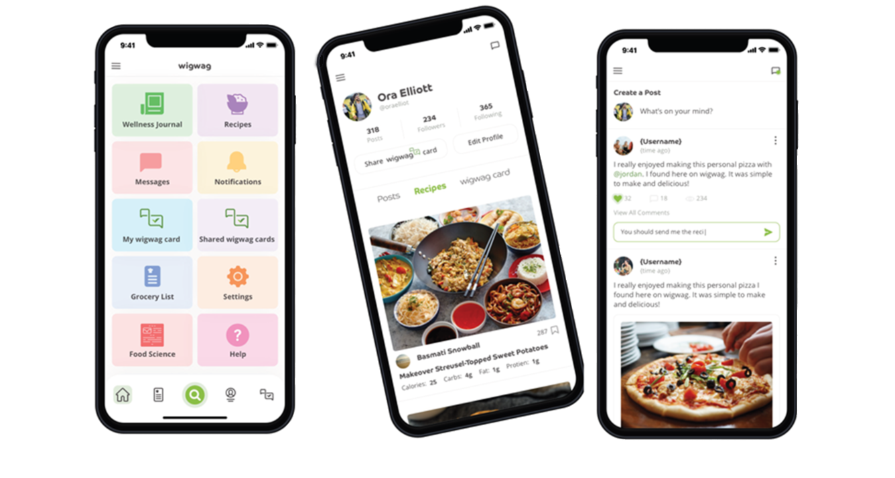

The Food Avoidance Strategy
wigwag --the food avoidance assistant you've been looking for.
Quickly identify, track, and privately share foods you avoid.
The Science of Food
We recommend that every wigwagger should perform a simple health risk assessment before you list a food to avoid on your wigwag card. It may be that all that is needed is a modification on how the food is prepared for consumption or modification
of the cooking method. If not, then avoiding the offending food may be beneficial to your long-term health. Wigwag will provide you the information and tools you need to live better.
The Food Table
A snapshot of common foods:
| Food Item |
Contains |
Attributes |
Did You Know? |
| White Potato |
Vitamin: C
Vitamin: B6
Mineral: Potassium
Mineral: Magnesium
Natural Toxin: Solanine, a glycoalkoloid
|
No cholesterol
Has dietary fiber
Causes inflammation
Is a nightshade
Has high glycemic index
Has solanine
Has chaconine
|
Many individuals are allergic or sensitive to silicone.
Potatoes are often fried in oil with dimethylpolysiloxane - a silicone.
Silicone prevents the oil from spattering or foaming.
|
| Yucca |
First list item
Second list item with a longer description
Third list item to close it out
|
First list item
Second list item with a longer description
Third list item to close it out
|
| Cashew |
First list item
Second list item with a longer description
Third list item to close it out
|
First list item
Second list item with a longer description
Third list item to close it out
|
Table is for reference only and not intended as medical advice. Talk to your healthcare professional if you have any questions or concerns.
The Potato
March 23, 2022 | Robert Walton, PhD
Health Risk Assessment
Most of us, have become so far removed from foods that we do not give a second thought at how food arrives at the grocery store or restaurant, where it came from, how was it produced or who farmed it.In the case of the potato, millions of
people love potatoes and make them a part of their diet.
But potatoes are not for every ‘body.’ So, should you list potatoes on your wigwag card? Only if,
- it is a part of your lifestyle choice such as weight-loss living and the low carb diet; or,
- it is a part of your healthcare practitioner’s prescribed or planned therapeutic nutritional plan for those with diabetes or cancer; or,
- you are experiencing symptoms after eating potatoes; or,
- it is a part of your Elimination Diet; or,
- you suspect a manufacturer, restaurant, friend, or family member are not properly preparing potatoes; or,
- you have a verified potato allergy, sensitivity, or intolerance; or,
- you simply dislike like potatoes.
Watch my video on YouTube: How to Properly Prepare Potatoes